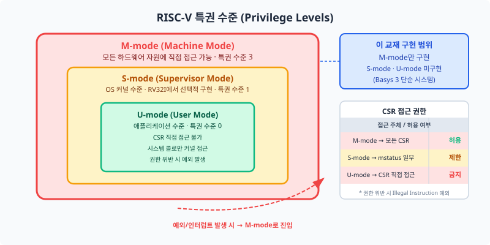
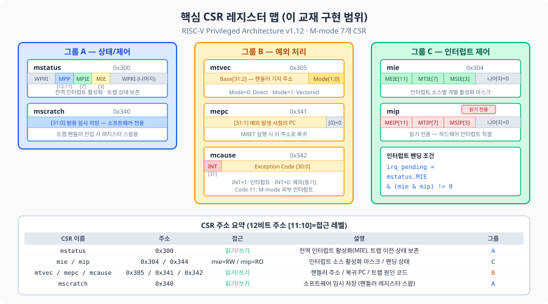
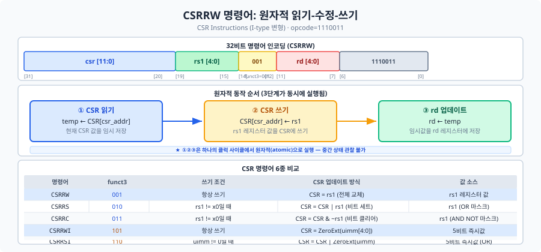

Chapter 17에서 만든 타이머가 timer_irq 신호를 출력합니다.
그런데 이 신호가 도착했을 때 CPU는 어떻게 반응해야 할까요?
현재 실행 중인 작업을 중단하고, 인터럽트를 처리한 뒤, 다시 원래 작업을 재개해야 합니다.
이 모든 과정을 조율하는 '제어판'이 바로 CSR(Control and Status Register, 제어 및 상태 레지스터)입니다.
이 챕터에서는 7개의 핵심 CSR 레지스터를 SystemVerilog로 구현하고,
Chapter 19의 예외·인터럽트 처리와 연결할 인터페이스를 설계합니다.
이 챕터에서 처음으로 '특권 수준(Privilege Level)'과 'CSR'이라는 개념을 만납니다. 이 개념들은 하드웨어와 소프트웨어의 경계에 위치해 있어서 처음에는 추상적으로 느껴질 수 있습니다. 그것은 정상입니다. 이 챕터를 끝까지 읽고 18.4절 실습을 마치면, 처음의 낯섦이 "아, 이거였구나"로 바뀔 것입니다.
Ch09~Ch12에서 여러분이 만든 5단 파이프라인 프로세서는 x0~x31이라는 32개의 범용 레지스터(General-Purpose Register)를 가지고 있습니다. 이 레지스터들은 덧셈, 뺄셈, 메모리 접근 등 연산의 피연산자와 결과를 저장하는 데 사용됩니다. 그러나 "현재 인터럽트가 허용되어 있는가?", "예외가 발생하면 어느 주소로 점프해야 하는가?", "방금 어떤 원인으로 예외가 발생했는가?" 같은 프로세서 제어 정보는 일반 레지스터에 저장하기 적합하지 않습니다. 소프트웨어가 실수로 덮어쓸 위험이 있고, 보안상 일반 사용자 코드에 노출해서는 안 되기 때문입니다.
이 문제를 해결하기 위해 RISC-V는 CSR(Control and Status Register, 제어 및 상태 레지스터)이라는
별도의 레지스터 공간을 정의합니다.
CSR은 일반 레지스터(x0~x31)와 완전히 분리된 12비트 주소 공간에 존재하며,
CSRRW, CSRRS, CSRRC 등 전용 명령어로만 접근할 수 있습니다.
일반적인 lw/sw 메모리 명령어나 add 같은 연산 명령어로는 절대 접근할 수 없습니다.
이 챕터를 마치면, 어떤 예외가 발생했는지(mcause), 어디서 발생했는지(mepc),
핸들러는 어디 있는지(mtvec)를 하드웨어가 자동으로 기록하는 프로세서를 갖게 됩니다.
RISC-V 스펙은 세 가지 특권 수준(Privilege Level)을 정의합니다.
이 교재에서는 M-mode만 구현합니다. 임베디드 시스템과 FPGA 기반 베어메탈(bare-metal) 환경에서는 M-mode 하나로 예외·인터럽트 처리를 완성할 수 있습니다. Linux 커널, FreeRTOS 등 모든 RISC-V 기반 운영체제는 결국 M-mode CSR을 통해 하드웨어와 대화합니다. 여러분이 지금 만드는 것은 소프트웨어 생태계 전체를 가능하게 하는 기반입니다.

CSR은 12비트 주소 공간을 사용합니다. 따라서 최대 212 = 4096개의 CSR을 정의할 수 있습니다. 이 12비트 주소는 단순한 번호가 아니라, 상위 비트에 접근 권한 정보가 인코딩되어 있습니다.
| 비트 | 필드 | 의미 |
|---|---|---|
| [11:10] | 접근 권한 | 11 = 읽기 전용(Read-Only), 그 외 = 읽기/쓰기 |
| [9:8] | 최소 접근 권한 | 00 = U-mode, 01 = S-mode, 10 = S-mode(HS), 11 = M-mode |
| [7:0] | 레지스터 번호 | 해당 권한 수준 내의 고유 번호 |
예를 들어, mstatus의 주소는 0x300 = 0b0011_0000_0000입니다.
상위 2비트 11은 M-mode 전용임을 나타냅니다.
0x3xx 대역이 모두 M-mode 읽기/쓰기 CSR입니다.
반면, 0xC00 = 0b1100_0000_0000처럼 상위 2비트가 11이고
다음 2비트도 11이면 M-mode 읽기 전용 CSR(cycle, time, instret 등)입니다.
읽기 전용 CSR에 쓰기를 시도하면 불법 명령어(Illegal Instruction) 예외가 발생합니다 — 이 처리는 Ch19에서 구현합니다.
CSR 명령어는 I-타입 인코딩을 사용하며 opcode = 1110011(SYSTEM)으로 식별합니다.
명령어[31:20] 필드(12비트)가 CSR 주소를 직접 인코딩합니다.
즉, 디코더는 이 12비트를 꺼내 CSR 주소로 바로 사용할 수 있습니다.
Ch17에서 구현한 타이머의 timer_irq 출력 신호,
기억하시나요? 바로 이 신호가 mip.MTIP(비트 7)에 직결됩니다.
여러분이 지난 챕터에서 만든 타이머의 인터럽트 신호가 이 챕터에서 구현할 레지스터로 들어옵니다.
과거 작업이 살아남아 연결되는 순간입니다.
이 절에서는 7개 CSR만 구현합니다: mstatus, mtvec, mepc, mcause, mie, mip, mscratch. RISC-V 스펙에는 수백 개의 CSR이 정의되어 있지만, M-mode 임베디드 시스템에서 예외·인터럽트를 처리하는 데는 이 7개로 충분합니다. 나머지는 모두 "나중에 필요할 때 추가"할 수 있습니다.
7개 CSR을 역할별로 세 그룹으로 묶으면 훨씬 쉽게 기억할 수 있습니다. 이 절이 챕터에서 가장 정보 밀도가 높은 부분입니다. 당장 모두 이해되지 않아도 괜찮습니다. 18.4절 실습을 마친 후 다시 돌아오면 비트 하나하나가 왜 필요한지 보일 것입니다.

mstatus(Machine Status Register, 기계 상태 레지스터)는 주소 0x300에 위치합니다.
프로세서 전체의 동작 상태를 제어하는 레지스터입니다.
구현할 비트 필드:
| 비트 | 이름 | 기능 | 초기값 |
|---|---|---|---|
| [3] | MIE (Machine Interrupt Enable) | 전역 인터럽트 활성화. 0이면 모든 인터럽트 차단, 1이면 허용 | 0 |
| [7] | MPIE (Machine Previous Interrupt Enable) | 트랩 진입 직전 MIE 값 저장. mret 시 MIE로 복원 | 0 |
| [12:11] | MPP (Machine Previous Privilege) | 트랩 진입 직전 특권 수준. M-mode only 구현 시 항상 2'b11 | 0 |
나머지 비트는 WPRI(Write Preserved, Read Ignored — 예약 비트)로 항상 0을 유지합니다.
따라서 mstatus 쓰기 시 반드시 마스크를 적용해야 합니다:
MSTATUS_MASK = 32'h0000_1888 (비트 3, 7, 12, 11만 허용).
마스크 없이 전체 비트를 저장하면 RISC-V 스펙 위반입니다.
트랩 진입 시 (trap_en = 1): MPIE ← MIE, MIE ← 0, MPP ← 2'b11 (M-mode 전용)
mret 실행 시 (mret_en = 1): MIE ← MPIE, MPIE ← 1, MPP ← 2'b11 (M-mode 유지 — U-mode 미구현 시 최소 지원 권한 수준)
mret의 완전한 동작(PC ← mepc)은 Ch19에서 구현합니다.
이 세 CSR은 하나의 시나리오로 묶어 이해하십시오: "예외 발생 → mtvec 조회(어디로?) → mepc 저장(어디서 왔나?) → mcause 기록(왜?)"
mtvec는 주소 0x305에 위치하며, 예외 핸들러의 기저 주소를 저장합니다.
비유의 한계: 실제 119는 경우에 따라 다른 부서로 자동 연결해 주지만, mtvec의 핸들러 주소는 소프트웨어가 부팅 초기에 설정해야 합니다. 또한 발생 원인(cause 코드)도 하드웨어가 자동으로 결정하므로 소프트웨어가 "어떤 핸들러로 갈지" 선택할 수 없습니다.
| 비트 | 이름 | 기능 |
|---|---|---|
| [31:2] | BASE | 핸들러 기저 주소 (4바이트 정렬) |
| [1:0] | MODE | 0 = Direct(모든 예외 → BASE), 1 = Vectored(원인별 → BASE + 4×cause) |
Vectored 모드에서 실제 핸들러 주소 계산(BASE + 4×cause_code)은
Ch19 트랩 처리 로직에서 수행합니다. csr_unit은 mtvec 레지스터 값만 출력합니다.
MODE 필드에서 2'b10과 2'b11은 구현 미지원(WARL — 입력값을 무시하고 허용값만 읽힘)으로
2'b00(Direct)으로 강제 처리합니다.
mepc는 주소 0x341에 위치합니다. 예외/인터럽트 발생 시점의 PC 값을 자동으로 저장합니다.
mret 명령어 실행 시 PC ← mepc로 복귀합니다.
RV32I에서 명령어는 4바이트 정렬이므로 하위 1비트는 항상 0입니다 (WARL).
mcause는 주소 0x342에 위치합니다. 트랩의 원인을 인코딩합니다.
| 비트 | 이름 | 의미 |
|---|---|---|
| [31] | Interrupt | 1 = 인터럽트, 0 = 동기 예외(Exception) |
| [30:0] | Exception Code | 원인 코드 (아래 표 참조) |
주요 mcause 코드 (인터럽트와 예외 코드 번호가 겹치므로 반드시 Interrupt 비트로 구분합니다):
| 구분 | 코드 | 설명 |
|---|---|---|
| 인터럽트 (bit[31]=1) | 3 | Machine Software Interrupt |
| 7 | Machine Timer Interrupt (timer_irq → mip.MTIP) | |
| 11 | Machine External Interrupt (ext_irq → mip.MEIP) | |
| 예외 (bit[31]=0) | 0 | Instruction Address Misaligned |
| 2 | Illegal Instruction | |
| 4 | Load Address Misaligned | |
| 6 | Store/AMO Address Misaligned | |
| 11 | Environment Call from M-mode (ecall) |
mie는 주소 0x304에 위치합니다. 개별 인터럽트 활성화 마스크입니다.
소프트웨어가 어떤 인터럽트를 받을지 제어합니다.
| 비트 | 이름 | 기능 |
|---|---|---|
| [3] | MSIE (Machine Software IE) | 소프트웨어 인터럽트 활성화 |
| [7] | MTIE (Machine Timer IE) | 타이머 인터럽트 활성화 (Ch17 timer_irq용) |
| [11] | MEIE (Machine External IE) | 외부 인터럽트 활성화 |
mip는 주소 0x344에 위치합니다.
현재 계류 중인(pending) 인터럽트 상태를 나타냅니다.
하드웨어 입력에서 직접 합성되므로 소프트웨어로 직접 쓸 수 없습니다.
| 비트 | 이름 | 소스 |
|---|---|---|
| [3] | MSIP (Machine Software IP) | sw_irq 입력 신호 |
| [7] | MTIP (Machine Timer IP) | timer_irq 입력 신호 (Ch17에서 생성) |
| [11] | MEIP (Machine External IP) | ext_irq 입력 신호 |
mip는 레지스터로 저장하지 않고 하드웨어 입력에서 직접 조합 논리로 합성합니다:
// mip: 하드웨어 직결 (소프트웨어 직접 쓰기 불가)
// ext_irq → MEIP[11], timer_irq → MTIP[7], sw_irq → MSIP[3]
assign mip_wire = {20'h0, ext_irq, 3'h0, timer_irq, 3'h0, sw_irq, 3'h0};
// [11] [7] [3]
// 인터럽트 펜딩 조건: mstatus.MIE=1 AND (mie AND mip) ≠ 0
assign irq_pending = mstatus_reg[3] & |(mie_reg & mip_wire);
mscratch는 주소 0x340에 위치합니다.
용도 제한이 없는 32비트 범용 임시 저장 레지스터입니다.
관례적으로 트랩 핸들러 진입 직후 일반 레지스터 값을 보존하기 위해 사용합니다.
예를 들어, 핸들러가 t0를 사용해야 한다면 먼저 mscratch에
t0를 저장하고, 핸들러 종료 시 복원합니다.
이것이 RISC-V ABI 표준 패턴입니다.
7개 CSR을 하나의 csr_unit 모듈로 구현합니다.
모듈 구조는 세 가지 블록으로 나뉩니다:
① 읽기 MUX (always_comb, csr_addr 기반 csr_rdata 선택),
② 쓰기 데이터 계산 (always_comb, csr_op 기반 csr_next 계산),
③ 레지스터 갱신 (always_ff, 우선순위: trap_en > mret_en > csr_we).
// ============================================================
// csr_unit.sv — CSR 읽기/쓰기 모듈 (핵심 발췌)
// RISC-V Privileged Architecture v1.12 기반
// 구현 CSR: mstatus(0x300), mie(0x304), mtvec(0x305),
// mscratch(0x340), mepc(0x341), mcause(0x342), mip(0x344)
// ============================================================
module csr_unit #(parameter HART_ID = 0)(
input logic clk, rst_n,
// CSR 명령어 인터페이스
input logic [11:0] csr_addr, // CSR 주소 (명령어[31:20])
input logic csr_we, // CSR 쓰기 활성화
input logic [2:0] csr_op, // 명령어 종류
input logic [31:0] csr_wdata, // 쓰기 데이터 (디코더가 계산)
// CSR 읽기 출력
output logic [31:0] csr_rdata, // 읽기 데이터 → rd에 기록
// 인터럽트 외부 입력
input logic timer_irq, // Ch17 타이머 → mip.MTIP
input logic ext_irq, // 외부 인터럽트 → mip.MEIP
input logic sw_irq, // 소프트웨어 인터럽트 → mip.MSIP
// Ch19 연결용 트랩 인터페이스 (현재는 0 고정)
input logic trap_en, // 트랩 발생 신호
input logic [31:0] trap_pc, // 트랩 발생 시 PC → mepc
input logic [31:0] trap_cause, // 트랩 원인 코드 → mcause
input logic mret_en, // mret 명령어 감지
// Ch19 연결용 출력
output logic [31:0] mtvec_out, // 트랩 벡터 기저 주소
output logic [31:0] mepc_out, // mret 복귀 주소
output logic irq_pending // 처리 가능한 인터럽트 존재
);
// CSR 주소 상수
localparam CSR_MSTATUS = 12'h300;
localparam CSR_MIE = 12'h304;
localparam CSR_MTVEC = 12'h305;
localparam CSR_MSCRATCH = 12'h340;
localparam CSR_MEPC = 12'h341;
localparam CSR_MCAUSE = 12'h342;
localparam CSR_MIP = 12'h344;
// CSR 명령어 funct3 상수
localparam CSR_RW = 3'b001; // CSRRW
localparam CSR_RS = 3'b010; // CSRRS
localparam CSR_RC = 3'b011; // CSRRC
localparam CSR_RWI = 3'b101; // CSRRWI
localparam CSR_RSI = 3'b110; // CSRRSI
localparam CSR_RCI = 3'b111; // CSRRCI
// mstatus WPRI 마스크: 비트 3(MIE), 7(MPIE), 12:11(MPP)만 허용
localparam MSTATUS_MASK = 32'h0000_1888;
// CSR 레지스터 선언 (mip는 조합 논리로 합성)
logic [31:0] mstatus_reg;
logic [31:0] mie_reg;
logic [31:0] mtvec_reg;
logic [31:0] mscratch_reg;
logic [31:0] mepc_reg;
logic [31:0] mcause_reg;
logic [31:0] mip_wire; // 레지스터 아님 — 직결 합성
// mip: 하드웨어 입력 직결 (소프트웨어 쓰기 불가)
assign mip_wire = {20'h0, ext_irq, 3'h0, timer_irq, 3'h0, sw_irq, 3'h0};
// 인터럽트 처리 조건: mstatus.MIE=1 AND (mie AND mip) ≠ 0
assign irq_pending = mstatus_reg[3] & |(mie_reg & mip_wire);
endmoduleCSR 명령어의 핵심은 원자성(Atomicity)입니다. CSR을 읽고 수정하는 두 동작이 하나의 분리 불가능한 연산으로 묶입니다. 이 특성 덕분에 인터럽트 핸들러에서 mstatus 비트를 안전하게 변경할 수 있습니다.
RISC-V Zicsr 확장은 6개의 CSR 명령어를 정의합니다. 모두 opcode = 1110011(SYSTEM)을 공유합니다.

| 명령어 | funct3 | rd에 저장 | CSR 쓰기 조건 | CSR에 쓰는 값 |
|---|---|---|---|---|
| CSRRW | 001 | 이전 CSR 값 | 항상 | rs1 |
| CSRRS | 010 | 이전 CSR 값 | rs1 ≠ x0 | CSR | rs1 |
| CSRRC | 011 | 이전 CSR 값 | rs1 ≠ x0 | CSR & ~rs1 |
| CSRRWI | 101 | 이전 CSR 값 | 항상 | uimm[4:0] (영확장) |
| CSRRSI | 110 | 이전 CSR 값 | uimm ≠ 0 | CSR | uimm |
| CSRRCI | 111 | 이전 CSR 값 | uimm ≠ 0 | CSR & ~uimm |
중요한 쓰기 조건:
CSRRW/CSRRWI는 rd = x0이어도 CSR에 쓰기가 발생합니다.
반면 CSRRS/CSRRC에서 rs1 = x0이면 CSR 값을 변경하지 않습니다 — 순수 읽기 효과만 발생합니다.
이 비대칭성을 반드시 기억하십시오.
실용적인 관용구: CSRRS rd, csr, x0은 CSR을 변경하지 않고 현재 값만 rd에 읽어오는 표준 패턴입니다.
CSRRC x0, mstatus, t1은 mstatus에서 t1이 1인 비트들을 클리어하되, 이전 값은 버립니다.
// csr_next: CSR에 기록될 다음 값 계산 (조합 논리)
// csr_wdata는 디코더가 계산하여 전달 (rs1_data 또는 {27'b0, uimm[4:0]})
always_comb begin
csr_next = csr_rdata; // 기본값: 변경 없음
case (csr_op)
CSR_RW, CSR_RWI: csr_next = csr_wdata; // 덮어쓰기
CSR_RS, CSR_RSI: csr_next = csr_rdata | csr_wdata; // 비트 세트
CSR_RC, CSR_RCI: csr_next = csr_rdata & ~csr_wdata; // 비트 클리어
default: csr_next = csr_rdata;
endcase
end
// CSR 레지스터 갱신 (순차 논리, 우선순위: trap_en > mret_en > csr_we)
always_ff @(posedge clk or negedge rst_n) begin
if (!rst_n) begin
mstatus_reg <= 32'h0;
mie_reg <= 32'h0;
mtvec_reg <= 32'h0;
mscratch_reg <= 32'h0;
mepc_reg <= 32'h0;
mcause_reg <= 32'h0;
end else if (trap_en) begin
// 트랩 진입: MPIE←MIE, MIE←0, MPP←11(M-mode), mepc←PC, mcause←원인
mstatus_reg <= (mstatus_reg & ~MSTATUS_MASK)
| ((mstatus_reg & 32'h8) << 4) // MIE→MPIE 자리 이동
| 32'h1800; // MPP=11(M-mode)
mepc_reg <= {trap_pc[31:1], 1'b0}; // 하위 1비트 0 보장
mcause_reg <= trap_cause;
end else if (mret_en) begin
// mret: MIE←MPIE, MPIE←1, MPP←11(M-mode 유지 — U-mode 미구현)
mstatus_reg <= (mstatus_reg & ~MSTATUS_MASK)
| ((mstatus_reg & 32'h80) >> 4) // MPIE→MIE 자리 이동
| 32'h80; // MPIE←1
end else if (csr_we) begin
// 일반 CSR 명령어 (CSRRW/CSRRS/CSRRC/즉치형)
case (csr_addr)
CSR_MSTATUS: mstatus_reg <= csr_next & MSTATUS_MASK; // WPRI 마스크 적용
CSR_MIE: mie_reg <= csr_next;
CSR_MTVEC: mtvec_reg <= {csr_next[31:2], csr_next[1:0]}; // MODE 저장
CSR_MSCRATCH: mscratch_reg <= csr_next;
CSR_MEPC: mepc_reg <= {csr_next[31:1], 1'b0}; // WARL: 하위 1비트 0
CSR_MCAUSE: mcause_reg <= csr_next;
// CSR_MIP: 소프트웨어 쓰기 무시 (RORL — hw 직결)
default: ;
endcase
end
end
파이프라인 프로세서에서 CSR 명령어는 ID 스테이지에서 csr_rdata를 읽고,
WB 스테이지에서 csr_we를 활성화합니다.
이 3단계 차이로 인해 연속된 CSR 명령어에서 해저드가 발생할 수 있습니다.
이 챕터에서는 CSR 독립 모듈로만 동작을 검증합니다.
파이프라인 통합과 CSR 해저드 해결은 Ch19에서 다룹니다.
"CSR 해저드가 있다는 것만 기억하고, 해결은 Ch19에서"라고 정리하십시오.
Ch09에서 파이프라인 레지스터의 파형을 처음 확인했을 때의 성취감, 기억하시나요? 이번에는 CSR 레지스터가 올바르게 읽히고 쓰이는지 시뮬레이션으로 확인합니다. 하드웨어가 처음으로 자신의 상태를 기억하고 인터럽트 조건을 판단하는 순간을 파형으로 목격하게 됩니다.
이 실습은 세 단계로 구성되어 있습니다. 각 단계는 이전 단계보다 조금 더 복잡하지만, 모두 이 챕터에서 배운 내용만으로 완료할 수 있습니다. 파이프라인 해저드나 예외 처리 흐름은 다루지 않습니다. CSR 레지스터가 올바르게 읽히고 쓰이는지만 확인합니다. 복잡한 통합은 Ch19에서 다룹니다.
가장 단순한 단계입니다. mtvec에 핸들러 주소를 설정하고 읽어서 확인합니다.
// 단계 1: mtvec에 핸들러 주소 설정 (CSRRW)
// 기대 결과: mtvec = 0x8000_0000
csr_write(CSR_MTVEC, CSR_OP_RW, 32'h8000_0000);
csr_read(CSR_MTVEC, rd);
// [PASS] mtvec = 0x80000000mie와 mstatus의 특정 비트를 설정합니다. 아직 타이머 신호가 없으므로 irq_pending은 0이어야 합니다.
// 단계 2: 비트 마스크 조작
// mie.MTIE (비트 7) 세트: CSRRS mie, t0 (t0 = 0x80)
csr_write(CSR_MIE, CSR_OP_RS, 32'h80); // mie |= 0x80 → MTIE 활성화
// mstatus.MIE (비트 3) 세트: CSRRS mstatus, t0 (t0 = 0x8)
csr_write(CSR_MSTATUS, CSR_OP_RS, 32'h8); // mstatus |= 0x8 → MIE 활성화
// timer_irq=0이므로 mip.MTIP=0 → irq_pending = 0 확인
// [PASS] timer_irq=0이면 irq_pending=0timer_irq를 1로 설정하여 mip.MTIP가 1이 되고, 모든 조건(MIE=1, MTIE=1, MTIP=1)이 충족될 때 irq_pending이 1이 되는지 확인합니다. 그 후 MIE를 클리어하여 마스킹 효과를 검증합니다.
// 단계 3: 인터럽트 마스킹 확인
// timer_irq = 1 → mip.MTIP = 1 (하드웨어 직결)
// mstatus.MIE=1, mie.MTIE=1, mip.MTIP=1 → irq_pending = 1
// [PASS] irq_pending=1 확인
// mstatus.MIE (비트 3) 클리어: CSRRC mstatus, t0 (t0 = 0x8)
csr_write(CSR_MSTATUS, CSR_OP_RC, 32'h8); // mstatus &= ~0x8 → MIE 비활성화
// → irq_pending = 0 (MIE=0이면 모든 인터럽트 차단)
// [PASS] 인터럽트 마스킹 확인// ch18_csr_tb.sv — CSR 유닛 테스트벤치
`timescale 1ns/1ps
module csr_tb;
logic clk, rst_n;
logic [11:0] csr_addr;
logic csr_we;
logic [2:0] csr_op;
logic [31:0] csr_wdata, csr_rdata;
logic timer_irq, ext_irq, sw_irq;
logic trap_en, mret_en;
logic [31:0] trap_pc, trap_cause;
logic [31:0] mtvec_out, mepc_out;
logic irq_pending;
localparam CSR_MSTATUS = 12'h300;
localparam CSR_MIE = 12'h304;
localparam CSR_MTVEC = 12'h305;
localparam CSR_OP_RW = 3'b001;
localparam CSR_OP_RS = 3'b010;
localparam CSR_OP_RC = 3'b011;
initial clk = 0;
always #5 clk = ~clk; // 100 MHz
csr_unit u_csr(
.clk(clk), .rst_n(rst_n),
.csr_addr(csr_addr), .csr_we(csr_we),
.csr_op(csr_op), .csr_wdata(csr_wdata), .csr_rdata(csr_rdata),
.timer_irq(timer_irq), .ext_irq(ext_irq), .sw_irq(sw_irq),
.trap_en(1'b0), .trap_pc(32'h0), .trap_cause(32'h0), .mret_en(1'b0),
.mtvec_out(mtvec_out), .mepc_out(mepc_out), .irq_pending(irq_pending)
);
// CSR 쓰기 태스크
task csr_write(input [11:0] addr, input [2:0] op, input [31:0] data);
@(posedge clk);
csr_addr <= addr; csr_op <= op; csr_wdata <= data; csr_we <= 1'b1;
@(posedge clk);
csr_we <= 1'b0;
endtask
// CSR 읽기 태스크
task csr_read(input [11:0] addr, output [31:0] data);
@(posedge clk);
csr_addr <= addr; csr_we <= 1'b0;
@(posedge clk);
data = csr_rdata;
endtask
logic [31:0] rd;
integer pass_cnt, fail_cnt;
initial begin
$display("=== Chapter 18 CSR 유닛 테스트 ===");
pass_cnt = 0; fail_cnt = 0;
rst_n = 0; timer_irq = 0; ext_irq = 0; sw_irq = 0;
csr_addr = 0; csr_we = 0; csr_op = 0; csr_wdata = 0;
repeat(5) @(posedge clk);
rst_n = 1;
// 단계 1: CSR 쓰기/읽기
$display("\n--- 단계 1: CSR 쓰기/읽기 ---");
csr_write(CSR_MTVEC, CSR_OP_RW, 32'h8000_0000);
csr_read(CSR_MTVEC, rd);
if (rd == 32'h8000_0000) begin
$display("[PASS] mtvec = 0x%08h", rd); pass_cnt++;
end else begin
$display("[FAIL] mtvec = 0x%08h (예상: 0x80000000)", rd); fail_cnt++;
end
// 단계 2: 비트 마스크 조작
$display("\n--- 단계 2: 비트 마스크 조작 ---");
csr_write(CSR_MIE, CSR_OP_RS, 32'h80); // mie.MTIE 세트
csr_write(CSR_MSTATUS, CSR_OP_RS, 32'h8); // mstatus.MIE 세트
@(posedge clk);
if (!irq_pending) begin
$display("[PASS] timer_irq=0 → irq_pending=0"); pass_cnt++;
end else begin
$display("[FAIL] 예상치 못한 irq_pending=1"); fail_cnt++;
end
// 단계 3: 인터럽트 마스킹
$display("\n--- 단계 3: 인터럽트 마스킹 ---");
timer_irq = 1;
@(posedge clk); @(posedge clk);
if (irq_pending) begin
$display("[PASS] irq_pending=1 확인 (MIE=%b, MTIE=%b, MTIP=%b)",
u_csr.mstatus_reg[3], u_csr.mie_reg[7], u_csr.mip_wire[7]);
pass_cnt++;
end else begin
$display("[FAIL] irq_pending=0 (MIE=%b, MTIE=%b, MTIP=%b)",
u_csr.mstatus_reg[3], u_csr.mie_reg[7], u_csr.mip_wire[7]);
fail_cnt++;
end
csr_write(CSR_MSTATUS, CSR_OP_RC, 32'h8); // mstatus.MIE 클리어
@(posedge clk);
if (!irq_pending) begin
$display("[PASS] MIE=0 → 인터럽트 마스킹 확인"); pass_cnt++;
end else begin
$display("[FAIL] 마스킹 실패 (irq_pending=1 유지)"); fail_cnt++;
end
$display("\n=== 완료: 통과 %0d건, 실패 %0d건 ===", pass_cnt, fail_cnt);
$finish;
end
// 타임아웃 보호
initial begin #100_000; $display("[TIMEOUT]"); $finish; end
endmodule# Vivado Simulator (xsim)
xvlog --sv ch18_csr_unit.sv ch18_csr_tb.sv
xelab csr_tb -debug typical
xsim csr_tb -runall
# VCS
vcs -sverilog ch18_csr_unit.sv ch18_csr_tb.sv -o sim_csr
./sim_csr이 챕터는 하드웨어와 소프트웨어의 경계에 있는 내용을 다루었습니다. 처음 접하면 추상적으로 느껴지는 것이 정상입니다. CSR은 한 번 읽어서 완전히 파악하는 내용이 아닙니다. Ch19에서 실제 예외 처리 흐름을 구현하면서 이 챕터로 다시 돌아오면, 각 비트가 왜 그 자리에 있는지 자연스럽게 이해됩니다.
이 챕터를 마친 후 다음 질문에 답해 보십시오:
0x8000_0004를 쓰면 Mode는 무엇인가? (Base = 0x8000_0001, Mode = 2'b00인가, 2'b01인가?)CSRRS x0, mie, t1에서 rd = x0라면 어떤 효과가 있는가?이 챕터를 처음 읽으면서 CSR 비트 하나하나가 모두 이해되지 않았을 수 있습니다. 지금은 '이런 레지스터들이 있고 대략 이런 역할을 한다'는 감각만으로 충분합니다. Ch19에서 실제 예외가 발생하고 mtvec이 가리키는 핸들러로 점프하는 순간, 이 챕터의 모든 것이 살아 움직일 것입니다.
0x8000_0000 기준.
t0 = 32'h8000_0000, mie = 32'h0000_0000인 상태에서
다음 명령어를 순서대로 실행한 후 mie의 최종 값을 구하시오:
CSRRW x0, mie, t0CSRRS x0, mie, t0 (t0 = 0x80으로 변경 후)CSRRC x0, mie, t0 (t0 = 0x08)32'h0000_0080(MTIE만 세트),
mip = 32'h0000_0880(MEIP와 MTIP 동시 계류).
어떤 인터럽트가 처리되며 다른 인터럽트가 무시되는 이유를 mie & mip 관계식으로 설명하시오.
두 인터럽트를 모두 처리하려면 mie를 어떻게 수정해야 하는가?
mcycle(0xB00, 클럭마다 자동 증가),
minstret(0xB02, 명령어 완료마다 증가).
다음 세 가지 설계 결정에 대한 근거와 SystemVerilog 선언부를 작성하시오:
(1) mcycle의 자동 증가와 CSRRW 초기화 간의 우선순위를 어떻게 결정하는가?
(2) minstret 증가 시점은 언제이며 파이프라인의 어느 신호를 사용해야 하는가?
(3) 읽기 MUX에 두 카운터를 추가하는 코드를 작성하시오.
힌트: mcycle은 클럭마다 자동으로 1씩 증가하므로 always_ff 블록에서 csr_we와 무관하게 항상 실행됩니다. 단, 소프트웨어가 카운터를 리셋할 수 있도록 csr_we && csr_addr == CSR_MCYCLE 조건의 쓰기 경로도 필요합니다.
CSRRW t0, mstatus, t1 // mstatus = t1, t0 = 이전 mstatus
CSRRS x0, mstatus, t0 // mstatus |= t0 (이전 값 의존)✅ Chapter 18 완료! CSR 유닛이 완성되었습니다. mstatus, mtvec, mepc, mcause, mie, mip, mscratch — 7개 레지스터가 모두 구현되어 있고, CSRRW/CSRRS/CSRRC 명령어로 원자적으로 접근할 수 있습니다. Chapter 19에서는 이 CSR들이 실제 예외/인터럽트를 처리하는 순간 살아 움직이는 것을 보게 됩니다.
지금 당장 전부 이해하지 않아도 됩니다. 각 절 학습 후 참조용으로 활용하세요. 이 코드는 Chapter 19에서 파이프라인에 통합할 때 그대로 재사용합니다.
// ============================================================
// ch18_csr_unit.sv — CSR 유닛 (Control and Status Register Unit)
// RISC-V Privileged Architecture v1.12 M-mode 구현
// 구현 CSR 7개: mstatus, mie, mtvec, mscratch, mepc, mcause, mip
// Ch19에서 파이프라인에 통합 예정
// ============================================================
module csr_unit #(parameter HART_ID = 0)(
input logic clk, rst_n,
// CSR 명령어 인터페이스 (파이프라인 ID/WB 스테이지에서 구동)
input logic [11:0] csr_addr, // CSR 주소 (명령어[31:20])
input logic csr_we, // CSR 쓰기 활성화
input logic [2:0] csr_op, // funct3: CSR_RW/RS/RC/RWI/RSI/RCI
input logic [31:0] csr_wdata, // 쓰기 데이터 (디코더 계산: rs1 또는 uimm)
// CSR 읽기 출력
output logic [31:0] csr_rdata, // CSR 읽기 데이터 → rd 기록
// 인터럽트 외부 입력 (하드웨어 직결 → mip 합성)
input logic timer_irq, // Ch17 타이머 → mip.MTIP[7]
input logic ext_irq, // 외부 인터럽트 → mip.MEIP[11]
input logic sw_irq, // 소프트웨어 인터럽트 → mip.MSIP[3]
// 트랩 인터페이스 (Ch19에서 구동, 현재 테스트벤치에서 0 고정)
input logic trap_en, // 트랩 발생 (예외/인터럽트 처리 진입)
input logic [31:0] trap_pc, // mepc에 저장할 PC 값
input logic [31:0] trap_cause, // mcause에 저장할 원인 코드
input logic mret_en, // mret 명령어 감지 → mstatus 복원
// Ch19 연결용 출력
output logic [31:0] mtvec_out, // 트랩 벡터 기저 주소 (MODE 포함)
output logic [31:0] mepc_out, // mret 복귀 주소
output logic irq_pending // 처리 가능한 인터럽트 존재 → 파이프라인 플러시 트리거
);
// --------------------------------------------------------
// CSR 주소 상수 (RISC-V Privileged Architecture v1.12)
// --------------------------------------------------------
localparam CSR_MSTATUS = 12'h300; // 기계 상태 레지스터
localparam CSR_MIE = 12'h304; // 기계 인터럽트 활성화
localparam CSR_MTVEC = 12'h305; // 기계 트랩 벡터 기저 주소
localparam CSR_MSCRATCH = 12'h340; // 기계 스크래치 (핸들러 임시 저장)
localparam CSR_MEPC = 12'h341; // 기계 예외 PC
localparam CSR_MCAUSE = 12'h342; // 기계 트랩 원인
localparam CSR_MIP = 12'h344; // 기계 인터럽트 계류 (읽기 전용)
// CSR 명령어 funct3 상수
localparam CSR_RW = 3'b001; // CSRRW
localparam CSR_RS = 3'b010; // CSRRS
localparam CSR_RC = 3'b011; // CSRRC
localparam CSR_RWI = 3'b101; // CSRRWI
localparam CSR_RSI = 3'b110; // CSRRSI
localparam CSR_RCI = 3'b111; // CSRRCI
// mstatus WPRI 마스크: 구현 비트만 허용
// 비트 3(MIE) + 7(MPIE) + 12:11(MPP) = 0x0000_1888
localparam MSTATUS_MASK = 32'h0000_1888;
// --------------------------------------------------------
// CSR 레지스터 선언
// --------------------------------------------------------
logic [31:0] mstatus_reg; // [3]=MIE, [7]=MPIE, [12:11]=MPP
logic [31:0] mie_reg; // [3]=MSIE, [7]=MTIE, [11]=MEIE
logic [31:0] mtvec_reg; // [31:2]=BASE, [1:0]=MODE
logic [31:0] mscratch_reg; // [31:0] 범용 임시 저장
logic [31:0] mepc_reg; // [31:1]=PC값, [0]=0(WARL)
logic [31:0] mcause_reg; // [31]=Interrupt, [30:0]=코드
// mip: 레지스터 없음 — 하드웨어 입력 직결 합성 (RORL)
// 소프트웨어 직접 쓰기 시도는 무시됨
logic [31:0] mip_wire;
// --------------------------------------------------------
// mip 합성: 하드웨어 입력 직결
// ext_irq → MEIP[11], timer_irq → MTIP[7], sw_irq → MSIP[3]
// --------------------------------------------------------
assign mip_wire = {20'h0, ext_irq, 3'h0, timer_irq, 3'h0, sw_irq, 3'h0};
// 인터럽트 처리 가능 조건: mstatus.MIE=1 AND (mie AND mip) ≠ 0
assign irq_pending = mstatus_reg[3] & |(mie_reg & mip_wire);
// --------------------------------------------------------
// CSR 읽기 MUX (조합 논리)
// --------------------------------------------------------
always_comb begin
csr_rdata = 32'h0;
case (csr_addr)
CSR_MSTATUS: csr_rdata = mstatus_reg & MSTATUS_MASK; // WPRI 비트 0 반환
CSR_MIE: csr_rdata = mie_reg;
CSR_MTVEC: csr_rdata = mtvec_reg;
CSR_MSCRATCH: csr_rdata = mscratch_reg;
CSR_MEPC: csr_rdata = mepc_reg;
CSR_MCAUSE: csr_rdata = mcause_reg;
CSR_MIP: csr_rdata = mip_wire; // 하드웨어 직결 반환
default: csr_rdata = 32'h0; // 미구현 CSR: 0 반환
endcase
end
// --------------------------------------------------------
// CSR 다음 값 계산 (조합 논리)
// csr_wdata: 디코더가 rs1_data 또는 {27'b0, uimm[4:0]} 선택하여 전달
// --------------------------------------------------------
logic [31:0] csr_next;
always_comb begin
csr_next = csr_rdata; // 기본값: 변경 없음
case (csr_op)
CSR_RW, CSR_RWI: csr_next = csr_wdata; // 덮어쓰기
CSR_RS, CSR_RSI: csr_next = csr_rdata | csr_wdata; // 비트 세트
CSR_RC, CSR_RCI: csr_next = csr_rdata & ~csr_wdata; // 비트 클리어
default: csr_next = csr_rdata;
endcase
end
// --------------------------------------------------------
// CSR 레지스터 갱신 (순차 논리)
// 우선순위: rst_n(최우선) > trap_en > mret_en > csr_we
// --------------------------------------------------------
always_ff @(posedge clk or negedge rst_n) begin
if (!rst_n) begin
// 리셋: 모든 CSR 0으로 초기화
mstatus_reg <= 32'h0;
mie_reg <= 32'h0;
mtvec_reg <= 32'h0;
mscratch_reg <= 32'h0;
mepc_reg <= 32'h0;
mcause_reg <= 32'h0;
end else if (trap_en) begin
// 트랩 진입 (예외/인터럽트 처리 시작)
// MPIE ← MIE (이전 MIE 값 보존)
// MIE ← 0 (트랩 처리 중 추가 인터럽트 차단)
// MPP ← 2'b11 (M-mode only — 항상 M-mode)
mstatus_reg <= (mstatus_reg & ~MSTATUS_MASK)
| ((mstatus_reg & 32'h8) << 4) // MIE(bit3) → MPIE(bit7) 자리 이동
| 32'h1800; // MPP[12:11] = 11(M-mode)
mepc_reg <= {trap_pc[31:1], 1'b0}; // 하위 1비트 0 보장 (WARL)
mcause_reg <= trap_cause; // {interrupt[31], code[30:0]}
end else if (mret_en) begin
// mret 실행 (예외 핸들러 복귀)
// MIE ← MPIE (이전 MIE 복원)
// MPIE ← 1 (스펙 요구사항)
// MPP ← 2'b11 (M-mode 유지 — U-mode 미구현 시 최소 지원 권한 수준)
// PC ← mepc (Ch19에서 처리)
mstatus_reg <= (mstatus_reg & ~MSTATUS_MASK)
| ((mstatus_reg & 32'h80) >> 4) // MPIE(bit7) → MIE(bit3) 자리 이동
| 32'h80; // MPIE ← 1
end else if (csr_we) begin
// 일반 CSR 명령어 (CSRRW/CSRRS/CSRRC/CSRRWI/CSRRSI/CSRRCI)
case (csr_addr)
CSR_MSTATUS: mstatus_reg <= csr_next & MSTATUS_MASK; // WPRI 마스크 적용
CSR_MIE: mie_reg <= csr_next;
CSR_MTVEC: mtvec_reg <= {csr_next[31:2], csr_next[1:0]};
// MODE[1:0]: WARL — 2,3은 ch19에서 필터링
CSR_MSCRATCH: mscratch_reg <= csr_next;
CSR_MEPC: mepc_reg <= {csr_next[31:1], 1'b0}; // WARL: 하위 1비트 0
CSR_MCAUSE: mcause_reg <= csr_next;
// CSR_MIP: 소프트웨어 쓰기 무시 (RORL — 하드웨어 직결)
default: ; // 미구현 CSR 쓰기 무시
endcase
end
end
// --------------------------------------------------------
// Ch19 연결용 출력
// --------------------------------------------------------
assign mtvec_out = mtvec_reg; // Vectored 주소 계산은 Ch19에서 수행
assign mepc_out = mepc_reg;
endmodule// ============================================================
// ch18_csr_tb.sv — CSR 유닛 테스트벤치
// 3단계 점진적 검증:
// 단계 1: CSR 쓰기/읽기 기본 확인
// 단계 2: CSRRS/CSRRC 비트 마스크 조작
// 단계 3: 인터럽트 마스킹 (mstatus.MIE + mie.MTIE + mip.MTIP)
// trap_en=0 고정: 트랩 진입/복귀 동작은 Ch19에서 확인
// ============================================================
`timescale 1ns/1ps
module csr_tb;
logic clk, rst_n;
logic [11:0] csr_addr;
logic csr_we;
logic [2:0] csr_op;
logic [31:0] csr_wdata, csr_rdata;
logic timer_irq, ext_irq, sw_irq;
logic trap_en, mret_en;
logic [31:0] trap_pc, trap_cause;
logic [31:0] mtvec_out, mepc_out;
logic irq_pending;
// CSR 주소 상수
localparam CSR_MSTATUS = 12'h300;
localparam CSR_MIE = 12'h304;
localparam CSR_MTVEC = 12'h305;
localparam CSR_MSCRATCH = 12'h340;
localparam CSR_MEPC = 12'h341;
localparam CSR_MCAUSE = 12'h342;
localparam CSR_MIP = 12'h344;
// CSR 명령어 상수
localparam CSR_OP_RW = 3'b001;
localparam CSR_OP_RS = 3'b010;
localparam CSR_OP_RC = 3'b011;
// 100 MHz 클럭
initial clk = 0;
always #5 clk = ~clk;
// DUT 인스턴스
csr_unit u_csr(
.clk(clk), .rst_n(rst_n),
.csr_addr(csr_addr), .csr_we(csr_we),
.csr_op(csr_op), .csr_wdata(csr_wdata), .csr_rdata(csr_rdata),
.timer_irq(timer_irq), .ext_irq(ext_irq), .sw_irq(sw_irq),
.trap_en(1'b0), .trap_pc(32'h0), .trap_cause(32'h0), .mret_en(1'b0),
.mtvec_out(mtvec_out), .mepc_out(mepc_out), .irq_pending(irq_pending)
);
// CSR 쓰기 태스크 (CSRRW/CSRRS/CSRRC)
task csr_write(input [11:0] addr, input [2:0] op, input [31:0] data);
@(posedge clk);
csr_addr <= addr; csr_op <= op; csr_wdata <= data; csr_we <= 1'b1;
@(posedge clk);
csr_we <= 1'b0;
endtask
// CSR 읽기 태스크
task csr_read(input [11:0] addr, output [31:0] data);
@(posedge clk);
csr_addr <= addr; csr_we <= 1'b0;
@(posedge clk);
data = csr_rdata;
endtask
// 합격/실패 카운터
logic [31:0] rd;
integer pass_cnt, fail_cnt;
initial begin
$display("=== Chapter 18 CSR 유닛 테스트 ===");
pass_cnt = 0; fail_cnt = 0;
// 초기화
rst_n = 0; timer_irq = 0; ext_irq = 0; sw_irq = 0;
csr_addr = 0; csr_we = 0; csr_op = 0; csr_wdata = 0;
trap_en = 0; mret_en = 0; trap_pc = 0; trap_cause = 0;
repeat(5) @(posedge clk);
rst_n = 1; // 리셋 해제
// -------------------------------------------------------
// 단계 1: CSR 쓰기/읽기 기본 확인
// -------------------------------------------------------
$display("\n--- 단계 1: CSR 쓰기/읽기 ---");
// mtvec에 핸들러 주소 설정
csr_write(CSR_MTVEC, CSR_OP_RW, 32'h8000_0000);
csr_read(CSR_MTVEC, rd);
if (rd == 32'h8000_0000) begin
$display("[PASS] mtvec = 0x%08h", rd); pass_cnt++;
end else begin
$display("[FAIL] mtvec = 0x%08h (예상: 0x80000000)", rd); fail_cnt++;
end
// mscratch에 임시 값 저장
csr_write(CSR_MSCRATCH, CSR_OP_RW, 32'hDEAD_BEEF);
csr_read(CSR_MSCRATCH, rd);
if (rd == 32'hDEAD_BEEF) begin
$display("[PASS] mscratch = 0x%08h", rd); pass_cnt++;
end else begin
$display("[FAIL] mscratch = 0x%08h (예상: 0xDEADBEEF)", rd); fail_cnt++;
end
// -------------------------------------------------------
// 단계 2: CSRRS/CSRRC 비트 마스크 조작
// -------------------------------------------------------
$display("\n--- 단계 2: 비트 마스크 조작 ---");
// mie.MTIE (비트 7) 세트: CSRRS
csr_write(CSR_MIE, CSR_OP_RS, 32'h80);
csr_read(CSR_MIE, rd);
if (rd[7]) begin
$display("[PASS] mie.MTIE(bit7) = 1"); pass_cnt++;
end else begin
$display("[FAIL] mie.MTIE 세트 실패, mie = 0x%08h", rd); fail_cnt++;
end
// mstatus.MIE (비트 3) 세트: CSRRS
csr_write(CSR_MSTATUS, CSR_OP_RS, 32'h8);
@(posedge clk);
// timer_irq=0이므로 irq_pending은 0이어야 함
if (!irq_pending) begin
$display("[PASS] timer_irq=0 → irq_pending=0"); pass_cnt++;
end else begin
$display("[FAIL] 예상치 못한 irq_pending=1"); fail_cnt++;
end
// -------------------------------------------------------
// 단계 3: 인터럽트 마스킹 확인
// -------------------------------------------------------
$display("\n--- 단계 3: 인터럽트 마스킹 ---");
// timer_irq = 1 → mip.MTIP = 1 (조합 논리 직결, 즉시 반영)
timer_irq = 1;
@(posedge clk); @(posedge clk);
if (irq_pending) begin
$display("[PASS] irq_pending=1 확인 (MIE=%b, MTIE=%b, MTIP=%b)",
u_csr.mstatus_reg[3], u_csr.mie_reg[7], u_csr.mip_wire[7]);
pass_cnt++;
end else begin
$display("[FAIL] irq_pending=0 (MIE=%b, MTIE=%b, MTIP=%b)",
u_csr.mstatus_reg[3], u_csr.mie_reg[7], u_csr.mip_wire[7]);
fail_cnt++;
end
// mstatus.MIE 클리어 → 인터럽트 차단 확인
csr_write(CSR_MSTATUS, CSR_OP_RC, 32'h8);
@(posedge clk);
if (!irq_pending) begin
$display("[PASS] MIE=0 → 인터럽트 마스킹 확인"); pass_cnt++;
end else begin
$display("[FAIL] 마스킹 실패 (irq_pending 여전히 1)"); fail_cnt++;
end
// 최종 결과
$display("\n=== 완료: 통과 %0d건, 실패 %0d건 ===", pass_cnt, fail_cnt);
if (fail_cnt == 0)
$display("[전체 통과] Ch19 통합 준비 완료");
else
$display("[주의] 실패 항목 확인 후 수정 필요");
$finish;
end
// 타임아웃 보호 (100 µs)
initial begin
#100_000;
$display("[TIMEOUT] 시뮬레이션 강제 종료");
$finish;
end
endmodule